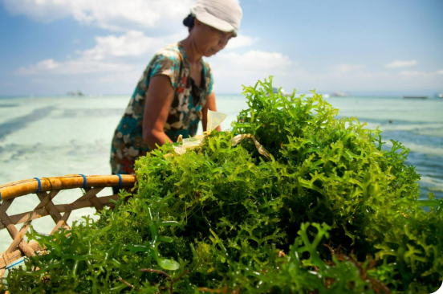
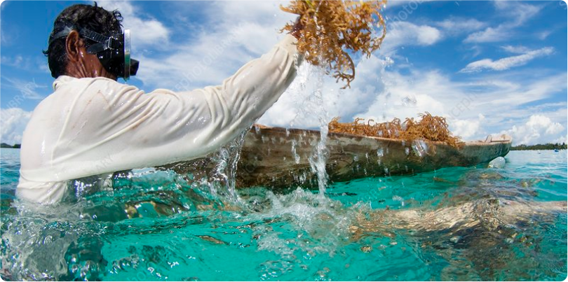
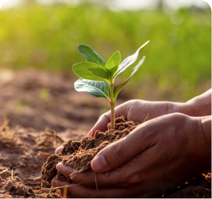
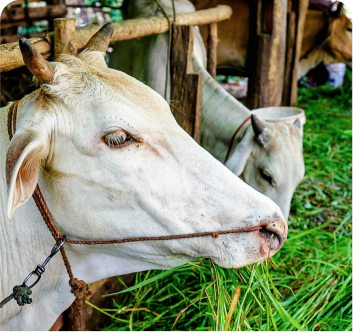
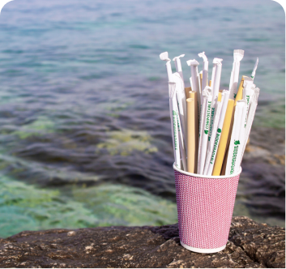

Cultivate, process & Market Seaweed and Seaweed products
Impact of seaweed cultivation
ALTERNATE SOURCE OF INCOME
Seaweed cultivation provides an alternative source of income during seasonal fishing bans in Chilika when fishermen often face income loss. Seaweed reduces vulnerability and ensures financial stability, improving the livelihoods of the coastal communities in Chilika.

WOMEN EMPOWERMENT
By engaging in seaweed cultivation, women in Chilika’s coastal communities will gain economic independence and skills, elevating their social status. This will not only boost household incomes but also increase their participation in decision-making processes, fostering gender equality.

CARBON SEQUESTRATION
Seaweed, absorbs carbon dioxide (CO2) during photosynthesis and can sequester ten times more carbon dioxide per hectare than a hectare of Amazonian forest. This can be used to generate carbon offset credits driving higher investments in seaweed cultivation projects across India
Nurturing the Sea, Crafting Possibilities
Seaweed refers to a diverse group of marine algae, which are primitive, plant-like organisms that grow in aquatic environments. These organisms are not true plants, but rather a type of macroalgae.
Uses Of Seaweed
Each type of seaweed has distinct characteristics and applications, from culinary delights to agricultural fertilizers and industrial products. Some of the major uses of seaweeds are:

Seaweed based Bio-stimulants & biofertilizer for plant growth
Seaweed based biostimulants are agricultural inputs that mitigate abiotic stress
like heat & drought and enhance plant productivity

Animal Feed additives
Seaweed’s suitability as an alternative feed component stems from its balanced amino
acid profile, rich mineral and vitamin content, and special combination of bioactive
compounds.
Seaweed as food & food additives
Seaweed has been eaten as food in many countires since centuries & is also gaining
popularity due to its richness of protiens, vitamins & essential minerals.
Seaweed as nutrceuticals
Seaweeds have become a sought-after ingredient for nutraceuticals indutry due to rich
mineral and bioactive compound content.

Seaweed as bioplastics:
Seaweeds have rapid growth rates, large yields, and the lack of a need for cultivable
land to grow them. This along with biodegradable properties makes them a possible
alternatives to plastics.
Seaweed Farming
How Does Growing Seaweed Help Climate Change?
Seaweed Farming Emeres As A sustainable solution Fostering environment Harmony
And Combating Climate Change Due To The Following.
Sustainable Alternative: Seaweed farming offers a sustainable alternative to traditional agriculture, requiring no freshwater, arable land, or fertilizers, thus minimizing environmental impact.
Reduce carbon footprint: Seaweeds can be used to make environment-friendly products like plant growth hormones which lower the dependence on fossil fuel-guzzling products like fertilizers and hence can help offset carbon footprint
Biodiversity Enhancement: Seaweed cultivation enhances biodiversity by providing a habitat for marine life. This promotes a healthier and more balanced ecosystem in aquatic environments.
Versatile Resource: Harvesting seaweed yields a versatile resource that can be used for various purposes, including food, fuel, and pharmaceuticals, reducing the reliance on conventional farming practices.
Deforestation Mitigation: Utilizing seaweed as a resource helps reduce the need for land-based agriculture, thereby curbing deforestation and its associated environmental impacts.
Eco-friendly Venture: Seaweed farming exemplifies an eco-friendly venture with the potential to address global challenges, illustrating the importance of sustainable practices for a healthier planet
Benfit of Seaweed
Seaweed can play a crucial role in combating climate change through various mechanisms,
harnessing its potential as a natural carbon sink and a sustainable resource.
Here are several ways in which seaweed can help mitigate climate change:
Carbon sequestration & Carbon Credits:
Seaweed, like other plants, absorbs carbon dioxide (CO2) during photosynthesis snd hence, can
capture significant amounts of carbon, thereby reducing the CO2 concentration in the atmosphere.
This can be used to generate carbon offset credits driving higher investments in seaweed
cultivation projects across the globe.
Algae Blooms and Ocean Alkalinity:
Seaweed can contribute to the growth of beneficial algae blooms that absorb CO2. Algae blooms
help maintain ocean alkalinity, which is vital for marine ecosystems and can counteract ocean
acidification, a consequence of excessive CO2 absorption by seawater.
...continue
Biofuel Production:
Seaweed can be processed to produce biofuels, such as bioethanol and biodiesel. These fuels are
considered carbon-neutral because the CO2 released when burned is offset by the CO2 absorbed
during seaweed growth. Using seaweed-based biofuels can reduce the carbon emissions from
transportation and energy production.
Reducing Methane Emissions:
Seaweed can be included in the diets of livestock, particularly cattle, to reduce methane
emissions. When added to animal feed, specific compounds in seaweed inhibit the microbes
responsible for methane production in the animals ' stomachs. Methane is a potent greenhouse gas,
and by reducing emissions from livestock, seaweed can help lower their overall environmental
impact.
Biodegradable Plastics and Packaging:
Seaweed extracts can be used in the production of biodegradable plastics and packaging
materials. These materials break down more easily in the environment, reducing the persistence of
plastics in landfills and oceans, and the associated carbon footprint.
Aquaculture and Coastal Protection:
Seaweed cultivation can be integrated into aquaculture practices, providing habitats for marine
life and enhancing coastal ecosystems. Healthy coastal ecosystems can absorb CO2 and also act as
natural buffers against the impacts of climate change, such as sea-level rise and storm surges.
Nutrient Uptake and Water Quality:
Seaweeds can help improve water quality by taking up excess nutrients, which are often
associated with nutrient pollution and harmful algal blooms. This can have positive impacts on
coastal ecosystems and reduce the release of greenhouse gases from polluted waters.
Carbon-Neutral Products:
Seaweed-based products, such as food, pharmaceuticals, and cosmetics, are considered
environmentally friendly because the carbon footprint of seaweed cultivation is offset by its
carbon sequestration potential.
Our Gallery
Contact
+91 82490 37558
Email
contact@bkresearch.in
Location
Brahma Kamal Research LLP KIIT-TBI, Room No. 214 KIIT Campus No. 11 KIIT University,
Bhubaneswar - 751024